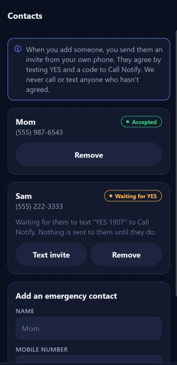

How emergency contacts opt in to Call Notify texts
Call Notify safety alerts, operated by Call App
Our number never texts anyone first. A person only receives messages from Call Notify after
they text the keyword YES with their personal 4-digit invite code to our number themselves.
1. A Call Notify user invites someone they know
In the Call Notify app, the user adds a person as an emergency contact (name and mobile number). The app then opens
the user's own messaging app with this personal invitation pre-filled, which the user sends from their
own phone number. Call Notify's number sends nothing at this step.

The Contacts screen in the Call Notify app. "Text invite" opens the user's own messaging app.
Sent from the user's personal phone to their friend
Hi Sam, it's Jordan. I'd like you as my emergency contact on Call Notify. If I ever miss a safety check-in, you'd get a text and a call with my location. To agree, text YES 1907 to (934) 451-1102.
2. The contact opts in by texting the keyword
If they agree, the contact texts YES and their code to the Call Notify number. This is the opt-in.
The code ties their consent to the specific person who invited them.
Contact → Call Notify
YES 1907
Call Notify → Contact
Call Notify (Call App): You're now an emergency contact for Jordan. We'll only text or call if they miss a safety check-in. Msg frequency varies. Msg & data rates may apply. Reply HELP for help, STOP to opt out.
3. Help and opt-out
Contact → Call Notify
HELP
Call Notify → Contact
Call Notify (Call App): safety alerts for people who added you as an emergency contact. Msg frequency varies. Msg & data rates may apply. Email alleniversonwastheoriginalai@gmail.com for help. Reply STOP to opt out.
Contact → Call Notify
STOP
Call Notify → Contact
Call Notify (Call App): You've been unsubscribed and won't receive any more messages. Reply START to rejoin.
4. Messages a contact may receive after opting in
Only if the person who invited them misses a safety check-in they scheduled:
Call Notify → Contact
SAFETY ALERT from Call Notify (Call App): Jordan didn't answer 3 check-in calls ("Walking home").
Last known location (4 minutes ago), near 120 Main St: https://maps.google.com/?q=40.71280,-74.00600
Try calling them at (555) 234-5678.
If you think they are in danger, call 911. Reply STOP to opt out.
And when that person marks themselves safe:
Call Notify → Contact
Call Notify (Call App): Jordan has checked in and marked themselves safe. No action needed. Reply STOP to opt out.
Message frequency varies. Message and data rates may apply. See our SMS Terms and
Privacy Policy. We do not sell or share your SMS opt-in data or personal information
with third parties for marketing purposes.